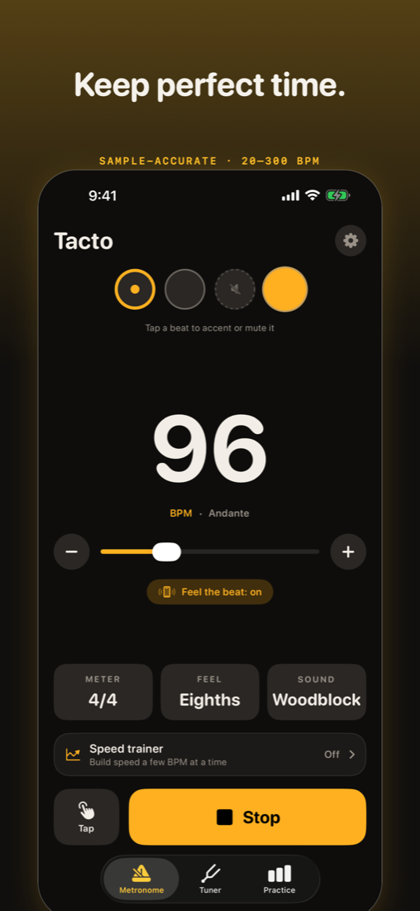

For iPhone · free download · one-time Pro unlock
A metronome you can feel.
Tacto keeps sample-accurate time from 20 to 300 BPM and taps every beat on your iPhone, so you feel the pulse even over a loud band. Tap a beat to accent or mute it, pick any meter and subdivision, and it keeps playing when your phone locks.
A chromatic tuner is built in. No account, no ads, no tracking.

Free
- Metronome 20–300 BPM, tap tempo, meters 1–12, quarter, eighth, triplet and sixteenth feels.
- Accent or mute any beat. Woodblock and click sounds.
- Feel the beat: haptics on every beat, stronger on the accent.
- Chromatic tuner with A4 calibration from 415 to 466 Hz.
Tacto Pro, one-time purchase
- Speed trainer: add a few BPM every few bars, up to your goal.
- Setlist: save a tempo for every song and exercise.
- Practice log: minutes per day, your week, your streak.
- Four more sounds.